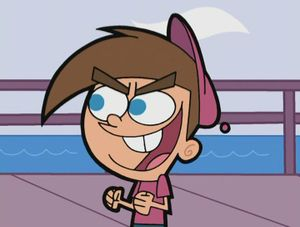

Sinopse:
Timmy Turner é um menino de 10 anos que
só quer ter a vida perfeita. Mas seus pais trabalham o dia
inteiro e ele é maltratado pela babá. Até que, um dia, ele
recebe a visita de dois Padrinhos Mágicos, o divertido Cosmo
e a responsável Wanda, que passam a ser seus companheiros
inseparáveis. Juntos, eles entram em grandes confusões.
Criador: Butch Hartman
primeiro Episódio: 30 de março de 2001
Adaptações: Padrinhos Magicos: O filme(2011), Os Padrinhos Mágicos: Abracatástrofe! (2003), Jimmy e Timmy: O Confronto (2004)
Gêneros: Comédia, Fanatasia, Animação
| Temporada | Eps | Temporada | Eps |
| Temporada 1 | Temporada 8 | ||
| Temporada 2 | Temporada 9 | ||
| Temporada 3 | Temporada 10 | ||
| Temporada 4 | |||
| Temporada 5 | |||
| Temporada 6 | |||
| Temporada 7 |
